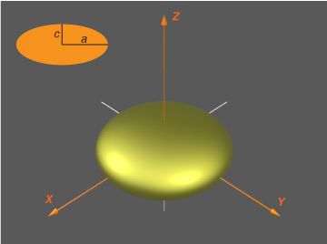
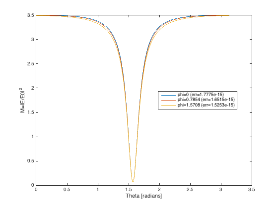
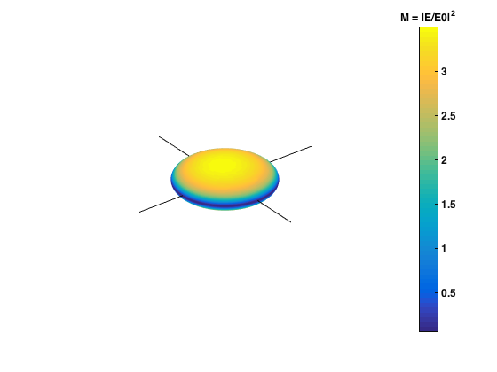

ScriptSolveForNearField
An example script showing how to obtain the field expansion coefficients, far-field cross-sections and surface field properties for a spheroid in a fixed orientation and at a single wavelength. Outputs the cross-sections and surface-averaged properties with accuracy estimates. Plots the field enhancement factors as a function of theta for three values of phi. Also produces a 3D plot of the surface field intensity on the particle.
Contents
Initialization
Note that you need to run InitPath in the root folder first to add required folders to the Matlab path so that functions can be called Alternatively, uncomment the following line
run('..\InitPath');
The following parameters should be defined:
- a: semi-axis along x,y
- c: semi-axis along z
- k1: wavevector in embedding medium (of refractive index nM) (k1=2*pi*nM/lambda)
- s: relative refractive index (s=n_Particle / nM)
- N: number of multipoles for T-matrix
- nNbTheta: number of thetas for quadratures
- sIncType: string such a 'KxEz' defining the incident field)
- or stIncPar: struct defining the incident field (alternative to sIncType)
- nNbThetaPst: number of thetas for surface field calculations
clear all close all
Parameters of the scattering problem
We define parameters for a gold nanodisc in water, modeled as an oblate spheroid

c = 15; % in nm a = 45; % in nm, i.e. 20 x 100nm full-axes lambda = 650; % in nm epsilon2 = epsAu(lambda); epsilon1 = 1.33^2; % for water % Define incident excitation along main axis sIncType = 'KxEz';
Convergence parameters
% Maximum multipole order for T-matrix and series expansions of fields N = 40; % Number of points for Gaussian quadratures to compute integrals in P and Q matrices nNbTheta = 120; % Number of points for post-processing (computing the surface fields % averages) nNbThetaPst = 360;
Collect simulation parameters in a structure
k1 = 2*pi/lambda * sqrt(epsilon1); s = sqrt(epsilon2)/sqrt(epsilon1); stParams.a=a; stParams.c=c; stParams.k1=k1; stParams.s=s; stParams.N=N; stParams.nNbTheta=nNbTheta; stParams.sIncType = sIncType; % For surface fields, the following parameters are also needed: stParams.lambda = lambda; stParams.epsilon2= epsilon2; stParams.epsilon1= epsilon1; stParams.nNbThetaPst = nNbThetaPst; % Optional parameters may also be defined as follows: stOptions.bGetR = true; % This is needed for near fields and will be overridden in any case stOptions.Delta = 0; % Use Delta=-1 to estimate Delta automatically stOptions.NB = 0; % NB will be estimated automatically stOptions.bGetSymmetricT = false;
T-matrix calculation
tic; [stC, stAbcdnm, stEsurf] = slvForNearField(stParams,stOptions); fprintf('\nT/R-matrices and near fields (N = %d) ... done in %.f seconds.\n', N, toc); % To test for convergence and accuracy for a given set of parameters, one % can for example repeat the calculation with N=N+5 and nNbTheta=nNbTheta+5 % as illustrated below fprintf('Convergence testing...'); tic; stParams2=stParams; stParams2.N=stParams2.N+5; stParams2.nNbTheta=stParams2.nNbTheta+5; [stC2, stAbcdnm2, stEsurf2] = slvForNearField(stParams2,stOptions); fprintf('\nT/R-matrices and near fields (N = %d) ... done in %.f seconds.\n', N, toc); fprintf('Results for a=%g, c=%g, k1=%g, s=%g+%gi, N=%d, Nt=%d\n',... a, c, k1, real(s),imag(s), N, nNbTheta); fprintf('\nCross sections for fixed excitation (and estimated accuracy):\n'); fprintf('Cext = %.20g, relative error: %.2g\n', stC.Cext, abs(stC.Cext./stC2.Cext-1)) fprintf('Csca = %.20g, relative error: %.2g\n', stC.Csca, abs(stC.Csca./stC2.Csca-1)) fprintf('Cabs = %.20g, relative error: %.2g\n', stC.Cabs, abs(stC.Cabs./stC2.Cabs-1)) fprintf('\nCross sections for orientation-averaged excitation (and estimated accuracy):\n'); fprintf('<Cext> = %.20g, relative error: %.2g\n', stC.Cextoa, abs(stC.Cextoa./stC2.Cextoa-1)) fprintf('<Csca> = %.20g, relative error: %.2g\n', stC.Cscaoa, abs(stC.Cscaoa./stC2.Cscaoa-1)) fprintf('<Cabs> = %.20g, relative error: %.2g\n', stC.Cabsoa, abs(stC.Cabsoa./stC2.Cabsoa-1)) fprintf('\nSurface-averaged surface-field properties (accuracy not tested):\n'); fprintf('<|E|^2> = %.20g\n', stEsurf.MLocAve); fprintf('<|E_{perp}|^2> = %.20g\n', stEsurf.MLocPerpAve); fprintf('<|E|^4> = %.20g\n', stEsurf.F0E4Ave);
sphCalculatePQ: Calculating P,Q for 41 m-values with N_Q = 40, N_B = 41, N_Theta = 120
T/R-matrices and near fields (N = 40) ... done in 2 seconds.
Convergence testing...sphCalculatePQ: Calculating P,Q for 46 m-values with N_Q = 45, N_B = 45, N_Theta = 125
T/R-matrices and near fields (N = 40) ... done in 2 seconds.
Results for a=45, c=15, k1=0.0128564, s=0.119065+2.67664i, N=40, Nt=120
Cross sections for fixed excitation (and estimated accuracy):
Cext = 162.29599945903106573, relative error: 5.6e-16
Csca = 88.598051846348511162, relative error: 2.2e-16
Cabs = 73.697947612682554563, relative error: 1.6e-15
Cross sections for orientation-averaged excitation (and estimated accuracy):
<Cext> = 23273.007567191260023, relative error: 1.3e-15
<Csca> = 13699.998155139241135, relative error: 2.9e-15
<Cabs> = 9573.0094120520188881, relative error: 1e-15
Surface-averaged surface-field properties (accuracy not tested):
<|E|^2> = 2.4940806742084609127
<|E_{perp}|^2> = 2.4537899387743360435
<|E|^4> = 7.1825788909828407469
Examples of postprocessing for surface fields
The following gets the surface field intensity enhancement factor (M) at one or more given phi (as a function of theta)
phi0=[0,pi/4,pi/2]; M = pstGetThetaDepFieldIntensity(stEsurf,phi0); % [3 x T] M2 = pstGetThetaDepFieldIntensity(stEsurf2,phi0); % [3 x T] relerrM = max(abs(M-M2),[],2)./max(abs(M2),[],2); % [3 x 1] % Make plots to show results figure('Name','Theta-dependence of surface-field intensity M=|E|^2 for fixed phi'); plot(stEsurf.theta, M); legend({['phi=', num2str(phi0(1)), ' (err=', num2str(relerrM(1)),')'], ... ['phi=', num2str(phi0(2)), ' (err=', num2str(relerrM(2)),')'], ... ['phi=', num2str(phi0(3)), ' (err=', num2str(relerrM(3)),')']}, ... 'Location', 'Best'); xlabel('Theta [radians]') ylabel('M=|E/E0|^2') % The following makes a 3D surface plot of the surface % field everywhere on the surface % NOTE that this requires to recompute all % the surface fields from scratch. Using 90x90 pts here: tic; stResE=pstMakeStructForField(stAbcdnm, stParams); pstPlotAllSurfaceField(90, stResE); fprintf('\n3D plot ... done in %.f seconds.\n', toc);
3D plot ... done in 1 seconds. 